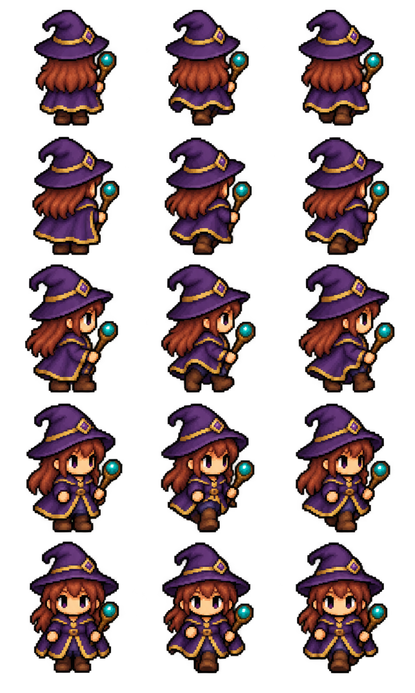
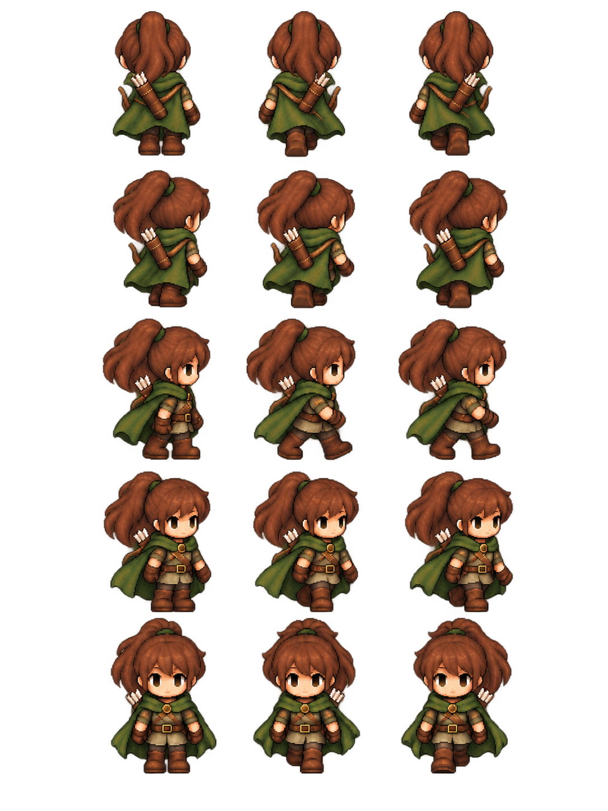

Règles et fonctionnement
Apparence du héros sur la carte
Reconnaître les classes et comprendre l’orientation des héros sur la carte.
Comprendre ce que cela implique
L’apparence suit la classe officielle connue. Les poses de marche et les miroirs des directions ouest servent uniquement à rendre les déplacements lisibles ; changer de côté un accessoire dans une image ne change pas l’équipement.
Le navigateur interpole les positions reçues pour obtenir une marche fluide. Il ne calcule ni déplacement officiel ni XP à partir des pas dessinés.


Détails de référence
Texte de référence mis en forme et conservé dans l’historique de cet article. Les paragraphes datés peuvent décrire une évolution ou une étape antérieure.
La carte choisit l'apparence à partir de la classe officielle du héros : aventurier à cape turquoise pour le Guerrier, mage aux cheveux roux avec robe violette et bâton, éclaireuse à cape verte avec queue de cheval et carquois. Le double du voyage astral utilise aussi l'apparence de la mage. Les silhouettes des alliés utilisent leur classe connue.
Chaque personnage dispose de huit orientations relatives à la caméra et de trois poses pour une marche simple : immobile, pas gauche, pas droit. Les cinq vues dessinées sont N, NE, E, SE et S. NW, W et SW reprennent respectivement NE, E et SE par miroir horizontal. Les accessoires changent donc de côté selon la direction ; cela n'a aucun effet sur l'équipement ou les capacités.
Les poses sont alignées sur un axe vertical et une ligne de pieds commune. Le cycle de marche dure 560 ms et accompagne l'interpolation visuelle des positions officielles. Les sprites ne calculent ni déplacement, ni vitesse, ni portée, ni récompense. Les règles restent validées exclusivement par le serveur, en GPS et sur carte fictive.
Les planches transparentes sont conservées dans app/assets/heroes/. Les rectangles des poses et les échelles sont définis dans hero-sprite-atlas.js et hero-class-sheets.js.